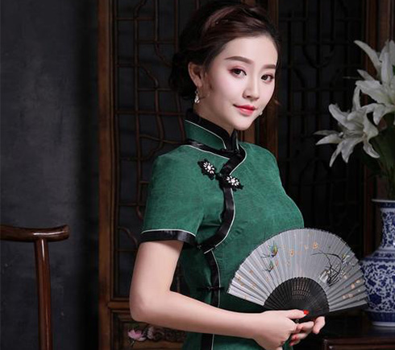
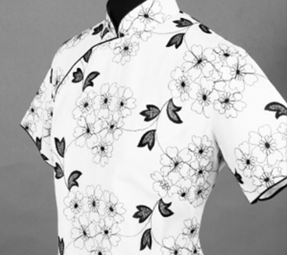

登录本站
首 页
旗袍文化
发展历程
精美图片
时下流行

｜京 派 旗 袍｜
京派旗袍是旗袍家族中的大家闺秀。 相对于“海派”的开放与创新，“京派”就显得皇家风范。尤其体现在包滚的工艺手法上。早先清朝时期的娘娘们穿的旗装便也是如此。用最鲜艳夺目的面料，衣服外口还要镶上一条宽宽的包边，一切皆显大气隆重。

｜海 派 旗 袍｜
《色戒》中，当汤唯穿着27件旗袍亮相时，雅致，精巧，性感，妩媚，成为了上海女子的一派风情。 其实海派旗袍的最大的特点在于反传统，它让旗袍有了胸省、腰省和装袖、肩缝，甚至加入垫肩以追求完美的身材。 不仅如此，海派旗袍在某一段时间还流行“透、露、瘦”，于是就采用镂空织物和半透明的丝绸为面料。